Guide to Git Shell:
operating Git using command line
Quick Reference:
The Basics:
Advanced Project Management:
What is Git? And why do we use it?
Git is a free, open-source version control system (VCS) designed to handle everything
from small tasks to major projects. The major difference between Git and any other VCS
is the way Git thinks about its data. Conceptually, most other version control systems
(Example: DropBox) store information as a set of files
with a means to reference the changes made to each file over time. Git, on the other
hand, thinks of its data more like a set of snapshots of a miniature file system. Every
time you commit, or save the state of your project in Git, it basically takes a picture
of what all your files look like at that moment and stores a reference to that snapshot.
To be efficient, if files have not changed, Git doesn’t store the file again, just a
link to the previous identical file it has already stored. This aspect of Git makes the
reliability of being able to revert back to an exact moment in a project, for any given
file or the project in its entirety, much more stable than other VCSs.
So let's say you and a team member are both updating the same XML document inside of your
shared repository
(directory of files). You make your changes, save them, and
upload them back to the shared repository. So far, so good. The problem, for most VCSs,
comes when your team member is working on the same document as you at the same time. One
of you is about to have your work overwritten and erased; however, Git keeps that from
happening. You and your fellow team member can each upload your revisions to the same
document, and Git will save two versions of the file. If you both were working on
different parts of the same document Git will automatically merge your
changes together without losing any work along the way. If you both happen to edit the
exact same segment of code Git will issue a merge conflict to point out where
the two files differ allowing you and your team to decide what version to keep. You can
even revert to an earlier version at any time, because Git keeps a snapshot
of
every change ever made by all project collaborators.
Another great aspect of Git is the emphasis on local operation. Git doesn't need to go
out to the server to get the history of a project and display it for you – it simply
reads it directly from your local computer. This means you see the project history
almost instantly, without having to wait for server network lag. This also means that
there is very little you can't do if you're offline. When you manage a project using
Git, you keep copies of all the project files on both your local machine and the online
GitHub server. You work on your local machine, periodically pushing your
changes onto the server so they'll be accessible to your project partners, and
periodically pulling changes made by your project team from the server to
your local machine. So as long as you have recently pulled in any changes you can work
offline until you are ready to push your changes. For more information regarding what
Git is and the benefits of using Git please visit this online version of Pro Git
(an entire how-to guide on Git written by Scott Chacon and Ben
Straub).
Why use Git Shell (command line)?
Unlike the Graphical User Interfaces (GUIs), the command line / terminal is the only
place you can take advantage of all the functions Git has to offer. The GUIs only
implement the simplistic functionality of Git as a means to use Git at the most basic
level. For most of you command line / terminal will be a foreign interface. Think of it
as a way to navigate your computer's files and systems by typing commands (strings of
text) at prompts, instead of using the mouse. Click here for
GitHub's helpful, interactive tutorial on using the Git command-line interface.
Basic Terms to Understanding Git and GitHub
Below is a list of key terms you will need to understand while using Git and GitHub. Each
of these terms will be discussed in greater detail throughout this tutorial, but think
of this as your quick reference guide to the basics.
- Repository (repo): a project's folder. A repository
contains all of the project files (including documentation), and stores each file's
revision history. Repositories can have multiple collaborators and can be either
public or private.
- GitHub: web-based Git repository hosting service. It
offers all of the distributed revision control and source code management (SCM)
functionality of Git as well as its own social network features. This is the web
interface for the remote, shared version of your project(s). Think of this as your
projects' central hub where project collaborators are able to discuss development
and share project files. GitHub.com
- Clone: a copy of a repository that lives on your
computer instead of on GitHub's server, or the act of making that copy. With your
clone you can edit the files in <oXygen/> and use Git to keep track of your
changes without having to be online. It is, however, connected to the remote version
so that changes can be synced between the two. You can push your local changes to
the remote to keep them synced when you're online.
- Remote: this is the version of a repo that is hosted on
GitHub's server. It can be connected to local clones so that changes can be
synced.
- Working Directory: your local version of files on your
computer, where you make changes. All Git files have a three part working directory:
unstaged, staged, committed. If you make edits
to a repo those changes sit unstaged until you have consciously added those changes
to the staging area. Staging changes allows you to review before committing.
- Commit: a.k.a.
revision
, this is an individual
change to a file (or set of files). It's like when you save a file, except with Git,
every time you save it creates a unique ID (the SHA
or
hash
) that allows you to keep record of what changes were made
when and by who. Commits usually contain a commit message which is a brief
description of what changes were made.
- Pushing: refers to sending your committed changes to a
remote repository such as GitHub.com. For instance, if you change something locally,
you'd want to then push those changes so that others may access them.
- Pulling: is the combined process of
fetching (getting the latest changes from a
remote repo without merging them in order to compare them to the code residing on
your local machine) and merging (applying the changes
from one file to another). For instance, if someone has edited the remote file
you're both working on, you'll want to pull in those changes to your local copy so
that it's up to date.
The above definitions are compiled from the following three sites,
which can be visited for definitions of even more Git terms: https://www.kernel.org/pub/software/scm/git/docs/gitglossary.html, https://betterexplained.com/articles/aha-moments-when-learning-git/, and https://help.github.com/articles/github-glossary/
Let's get started!
How to create a GitHub account:
Because GitHub is a social networking site, where people post their code so that it will
be accessible to others, using it requires creating an account. You can create a free
account by navigating to https://www.github.com. You are not required to create an account using your
pitt.edu address; however, associating an educational email address with your account
may give you additional benefits (including five free private
repos).
To create your account, enter a user name, email address, and password and then click the
green button that says Sign up for GitHub
.
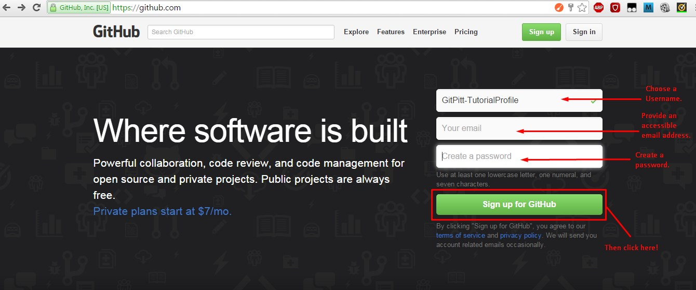
Be sure to
select the free option, and then click the green button that says Finish sign up
.

After
creating your account, GitHub will prompt you to verify your email address and decide on
notification frequency. Make sure to follow the link in the verification email. It is
important while you are enrolled in this coding course that you regularly checking
GitHub so you may decide to allow all notifications (knowing you
can change this later) You will then be directed back to your account.
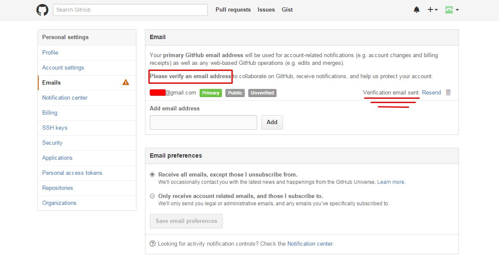


Note: We have highlighted some recommended features of your GitHub account that
you should take some time exploring further.
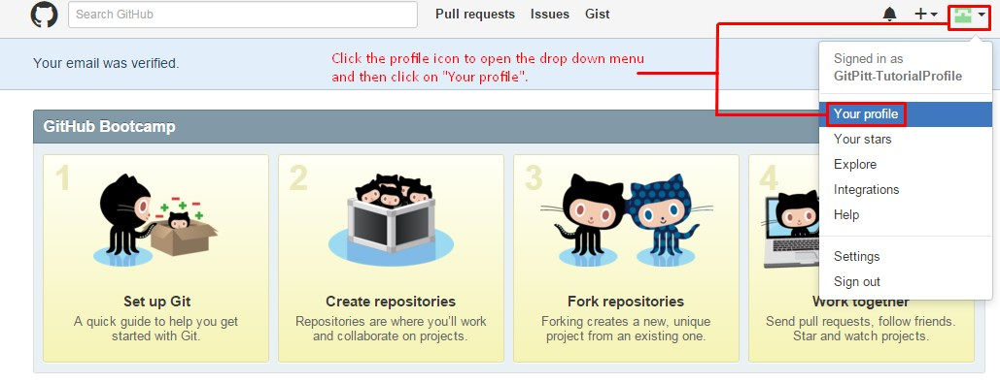

Downloading Git Shell
Git is available for download on all three of these platforms: Linux, Mac, and Windows. To download
Git on your local machine follow the instructions available here. Since platform downloads differ we are not going to go through a
step-by-step installation process. However, our suggested settings are as follows:
- If the download asks about
Adjusting your PATH environment
, we recommend
selecting Use Git Bash only
as it provides an unmodified PATH.
- If the download asks about
Configuring the line ending conversations
, we
recommend choosing the option of Checkout Windows-style, commit Unix-style line
endings
.
- When the download asks where you want Git saved and/or where to save future repos
you NEED to browse your computer and save to a logical place on your local machine
that you know how to access easily.
After you have completed the download you will need to configure your local machine's Git
with your online GitHub account. Begin configuration by opening Git shell and entering
the following commands (after the $):
$ git config --global user.name "YOUR NAME"
$ git config --global user.email "YOUR EMAIL ADDRESS"
Be sure to use the same email address you used when signing up for your GitHub account.
This will add your name and email to a file named .gitconfig in your home
directory. To verify that you entered your information correctly use the command:
$ git config --list. For more information on the git
config command click here. Creating a Repository
What is a repo?
Projects on GitHub are stored in repos (short for repositories), which you can think of
as equivalent to folders or directories on your computer. Repos can contain plain files
and subdirectories, so you can use the subdirectories to organize your project files
according to whatever hierarchy makes sense to you. Initially you may want to put all of
your project files into the main repo directory, and as you add additional files and
your project becomes more complex, you can think about creating subdirectories and
distributing the files among them according to file type or other criteria. Your project
mentor will advise you about how to structure the directory space for your project.
Your main project repo will reside on the GitHub server, which is the remote server that
is accessible to others. It is possible to edit files directly on the server using the
GitHub interface, but our suggested way to interact with GitHub is to work on copies of
the project files on your own machine and then, when you are satisfied with the state of
your work, to push (upload) your new or modified files to the remote server so that your
project partners will have access to them. Similarly, when your project partners push
their changes to the server, those won’t be reflected in the copies on your local
machine until you pull (download) them. The process of uploading files you have modified
from your local machine to the GitHub server, and of downloading from the GitHub server
files that your project partners may have developed or modified and uploaded, is called
syncing (short for synchronization). Syncing with command line requires two basic
commands: git pull and git push. The command git
pull can be broken down into git fetch and git
merge, but we will discuss the distinction later in this tutorial. When you
begin a work session, you should start by syncing your local project space with the
server using git pull, so that you’ll catch up on any changes other project
contributors have made. When you reach a stopping point in your work (when you have new or updated files that your project partners need
to see), you should commit (git commit) and sync again, but this
time using git push. You don’t have to push after every keystroke, but you
should commit regularly and push whenever you reach a reasonably stable intermediate
point to which your project partners should have access.
How to create a repo:
The best way to initiate a new repo, for our group projects, will be to create it through
the online web interface. Easy to follow instructions on how to do this can be found here. If
a repo is created through the web interface it will need to be cloned in order for you to access it and begin working on your local computer.
Only one member of your project team will need to create the project repo, and all other
team members will clone from that repo.
(If you wish to create a repo by using Git Shell you only need to know
one command: $ git init. This initializes a git repository by creating the
initial .git directory in a new or an existing project pending on the directory
preceding the command.)
Adding and Deleting project collaborators
Alongside version control, one of GitHub's most useful features is that it supports
collaboration. Forget the days of emailing a file back and forth between group members
as it is updated, or waiting to edit a document for fear of losing simultaneous edits.
GitHub allows multiple collaborators to manage a repository. The only way to handle
collaborators is through the web interface:
- Go to https://www.github.com
- Sign in and navigate to your profile.
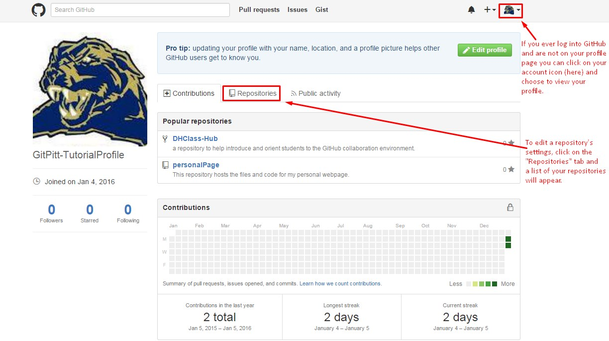
- Choose the repositories tab from your profile.
- Select the repo to which you want to add a collaborator.
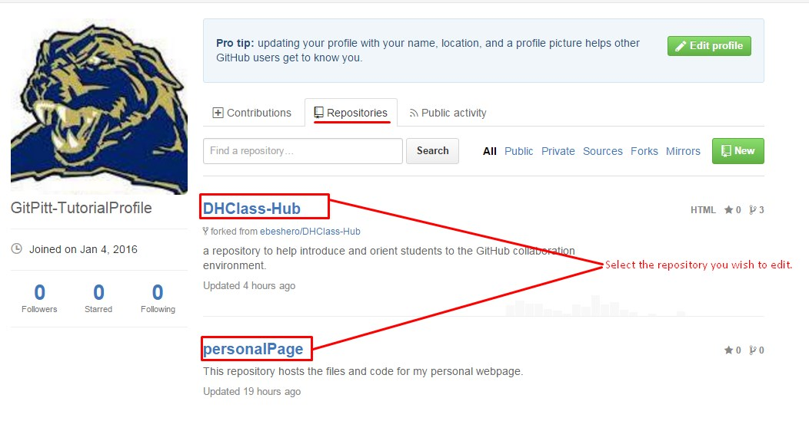
- Select Settings at the top of the screen.
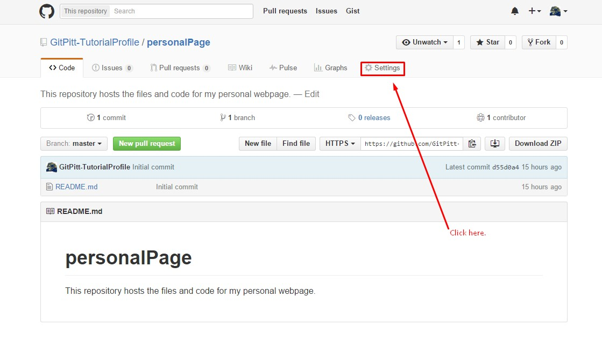
- On the Settings page, move to the menu on the left side of the page, and select
Collaborators
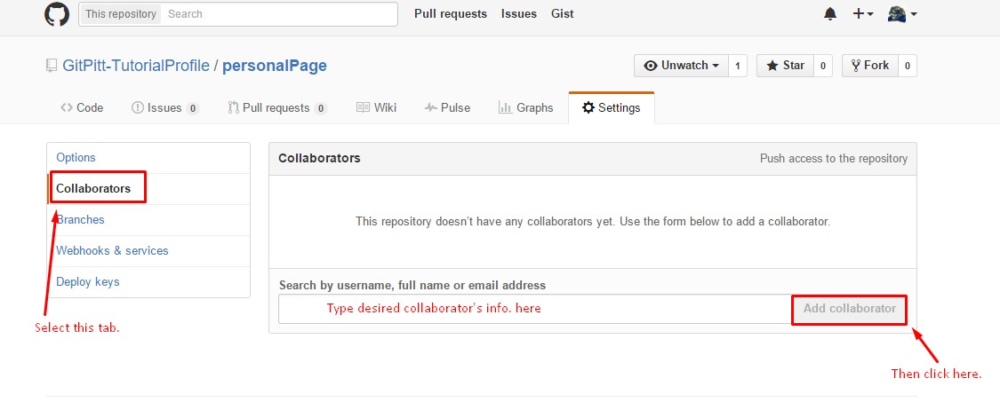
- Type the user name of the collaborator you want to add. (This means that you’ll
need to ask your collaborators to tell you their GitHub user names in advance.) As
you type, a drop down list will be generated matching what you have typed. Select
the user you would like to add from the list. Then click Add collaborator.
In the future, if collaborators need to be removed simply navigate this same path and
there will be an option beside each collaborator to remove them.
Cloning
As we explain above, the way you work on your project (create files, edit files, delete
files) is to work on them on your local machine and then sync any modifications to the
GitHub server, so that they will be accessible to your project partners. The Git term
for copying a project from the GitHub server to your computer initially so that you can
begin to work on it locally is called cloning. You only have to clone a
project once, when you first begin to work on it. Cloning is the copying of a
project already in existence on the GitHub server to your local computer so that you can
begin to work on it; whereas, syncing is exchanging updates between your local computer
and the GitHub server after you’ve already cloned the repo and established a local copy
in which you can work. This working model separates saving your work to your local
computer (which you should do frequently)
and syncing your local clone of the repo with the master copy on the GitHub server, a
design that protects you from uploading mistakes to the server. That is, you do your
development on your local machine, where only you have access to the files, and when
you’re ready to share your work with your project partners, you sync (upload) it
explicitly to the server.
Navigating Directories
Before you clone a repo, you need to understand how to navigate between directories using
Git Shell. When opening Git Shell from a shortcut link you will be placed in the main
configuration folder you set up when installing Git. The following image explains how
you navigate between directories:
How to clone an existing repo:
To clone a repo from the remote online server using command line you use one easy
command: git clone. After git clone you copy the url of the
repo you wish to clone, a space, and then a name for the folder where the cloned repo
will exist.
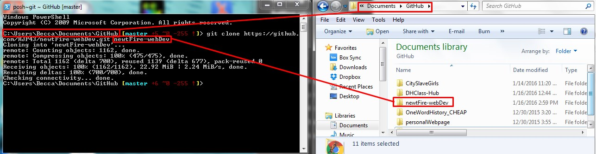
This creates a copy of the entire repository on your local machine and adds the original
location as a remote so you can pull from it again and push to it if you have
permissions. Note: you will only be able to directly push changes to the GitHub server
if you have been added as a project collaborator. Later in this tutorial we will discuss
how you can contribute to other GitHub projects that you are not a collaborator on via a
forking and a pull request.
Basic Git workflow:
When making changes to a repo it is important to remember the three parts or your Git
repo on your local machine: unstaged, staged,
committed. If you make edits to a repo those changes sit unstaged until you
have consciously added those changes to the staging area. This mean you could modify a
file multiple times without documenting every single keystroke before asking Git to
track those changes. Once you have added changes to the staging area Git will monitor if
any new changes differ from what was added and mark those changes as unstaged. Staging
changes allows you to review before committing.

- Before you begin working you ALWAYS need to be sure your local repo
is up-to-date with the remote GitHub repo. To do this we can either use the commands
git fetch and git merge or the single command
git pull. By using git fetch and git
merge you can first see the changes that are being brought into your
local repo (or fetched) from the remote repo. This allows for you to,
upon review, make the decision to merge those remote changes with your
local repo. The command git pull combines the two previously mentioned
commands into one step, which is convenient yet dangerous. 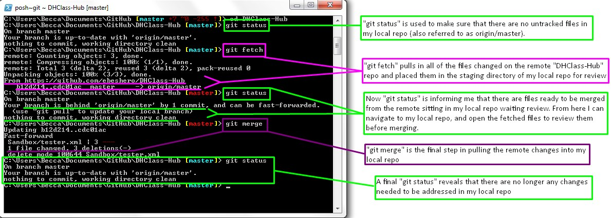
Some believe it is best practice to review all of the
remote files you are bringing into your local repo. before merging. A
detailed argument for always using git fetch and git
merge over git pull can be found here.
- Begin working by modifying files in your working directory. When you want
to change a file, edit your local copy. You can do this by accessing the files on
your local machine, like you would any file stored normally on your computer, and
making changes. Be sure new files get saved in the file location configured with
Git.
- After you have files created in your working directory you need to inform
Git that you saved the files in the git configured directory with purpose and tell
git to take a snapshot of the changes. Unlike other VCSs, Git has something called
the
staging area
or index
. This is an intermediate area where commits
can be formatted and reviewed before completing the commit. One thing that sets Git
apart from other tools is that it's possible to quickly stage some of your files and
commit them without committing all of the other modified files in your working
directory or having to list them on the command line during the commit. This allows
you to stage only portions of a modified file. Gone are the days of making two
logically unrelated modifications to a file before you realized that you forgot to
commit one of them. Now you can just stage the change you need for the current
commit and stage the other change for the next commit. This feature scales up to as
many different changes to your file as needed. To stage a file, use the command
git add. If you want to stage all of the changed or newly created
files stored in the working directory you can type git add -A. To
specify that you only want to stage a certain type of file you use an asterisk. For
example: to stage all of the .html files you type git add *.html. If
there is only a single file you want to stage you can type the filename after the
command. For example: git add index.html. 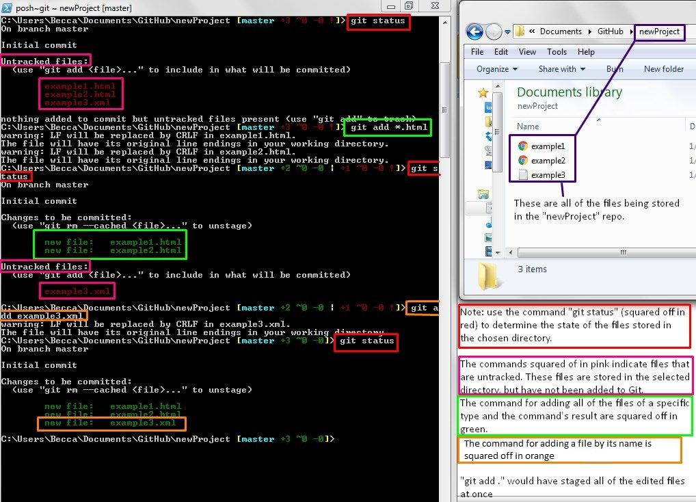
- When you reach a point where you want to sum up the progress of your work in
preparation for sharing, you do a commit. This takes the files as they are in the
staging area and stores the staged snapshot permanently to your local Git directory.
This is done with the command
git commit. To write a commit message
right inside of Git Shell type git commit -m followed by the commit
message in quotes. Git requires a commit message when committing. Think of commit
messages as the breadcrumbs of your project for yourself and your team members;
every commit message documents changes to the project with an author and time stamp.
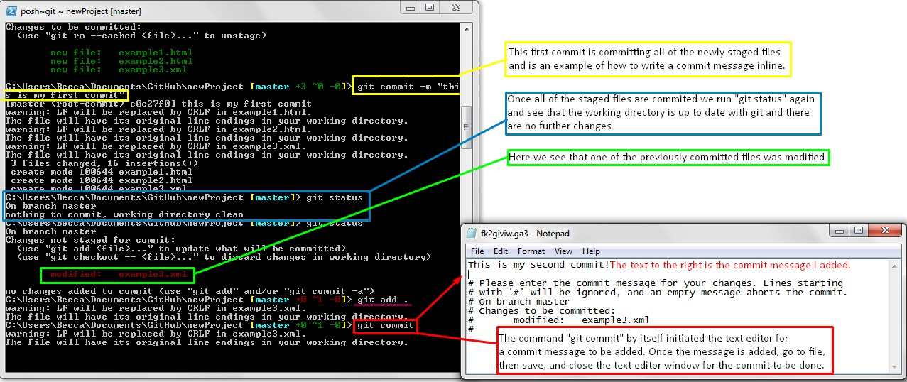
- Once you are ready to share your changes with the rest of your project team you need
to push your local changes to the remote GitHub server. This is done with the
command
git push. 
Almost done...
At this point in the tutorial you now know the basics of collaborating on a
Git / GitHub project. We recommend you clone our DHClass-Hub. Once
you have cloned it explore the repo through your local machine's file explorer. Then add
a file to our sandbox folder. In order for you to push that file we will need to add you
as a collaborator. This is the perfect moment to create a GitHub issue. Navigate to the
DHClass-Hub GitHub
page. At the top of the page, under ebeshero/DHClass-Hub
you will see a
tab that says Issues
. When you create your own repo you may need to change the
settings to include an issues board; follow directions here.
Once you are in our DHClass-Hub Issues Board notice there are open issues and closed
issues. Search through the open issues for an issue where others are asking to be added
as a collaborator. If there is such an issue already existing click on it. If there is
not an existing issue click the New issue
button at the top of the page.
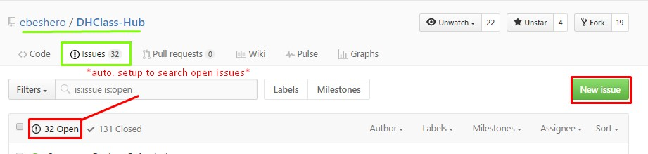
Creating an issue and commenting on an issue are very similar. Issues on GitHub are
written in Markdown Language. In fact, markdown is used for
styling all forms of writing on the GitHub platform (including
issues, readme files, and wikis).
GitHub offers a comprehensive guide to writing markdown that we recommend you
review; however, when writing on the GitHub interface there are options similar to
Microsoft Word that can be toggled to have a specific styling applied to your text.
Leave us a comment in either the existing add as collaborator
issue or one you
create to inform us you are ready to add files to the DHClass-Hub.
Common Commands:
Here is a list of commands used most frequently, and some options to modify the results
of each command. Some of the commands listed here are associated with advanced project management while others are more basic. We
have not listed every possible command; however we can recommend these sites to review
more commands: https://git-scm.com/docs, https://www.siteground.com/tutorials/git/commands.htm, and https://orga.cat/posts/most-useful-git-commands. Another really great thing
about Git is that it has been in existence since 2005 and is used widely among computer
programers; therefore, the resources on Git and Git commands is vast!
git
help: possibly the most useful Git command, this command allows you
to search the most common Git commands in the command/terminal shell. If you follow
this command with another command or concept (ie. git
help push) Git generates a html page detailing the command or
concept as well as possible options for its use.git
init: initializes a git repository by creating the initial .git
directory in a new or in an existing project.git
clone: copies an existing GitHub repo to local machine.git
status: checks the working directory to see if up-to-date with
remote
repo.git add:
a.k.a. staging changes, adds changes to staging area of the working directory. This
command is the first step in committing changes to your local version of the repo
before pushing them to the remote GitHub version of the repo. By adding
-A
(git add -A) Git adds, modifies, and
removes ALL entries to match the working directory. To specify that you only want to
stage a certain type of file you use an asterisk. For example: to stage all of the
.html files you type git add *.html. If there is only a single file you
want to stage you can type the filename after the command. For example: git
add index.htmlgit commit: tells Git to record the changes made to your version of the repo. Every commit needs to have a message that explains what files have been edited/added. After this command add -m and then the commit message in quotes (git commit -m "This is where your message goes").
Advanced Project Management
Branching: what is it, and why do we do it?
Branching means you diverge from the main line of development and continue to do work
without messing with that main line. The master branch is the main branch of a project.
When working in projects with multiple collaborators it may be important that the master
branch not have errors, and always be in good working order. If everyone is writing new
code into the master branch, it’s possible for the master branch to enter an unstable
state temporarily. To avoid that, projects may require that all developers work on
different parts of the project separately, in their own branches, and merge their
individual development branches into the master branch only once they are confident that
it won’t have a destabilizing effect. This can be useful even in single-developer
projects if you need to maintain multiple versions, such as a stable branch that people
should be able to download and use and a development branch that will eventually become
the new stable branch, but that isn’t yet stable. Branches can be merged and deleted
because a branch is an inalienable part of the repo in which it is created in; thus,
working in a branch requires you to already have a cloned repo. Just to be clear, when
you clone a repo that has existing branches the entire repo gets cloned including all of
the repo's existing branches.
To really understand the way Git does branching, we need to take a step back and examine
how Git stores its data. As stated above, Git doesn’t store data as a series of
changesets or differences, but instead as a series of snapshots. When you make a commit,
Git stores a commit object that contains a pointer to the snapshot of the content you
staged. This object also contains the author’s name and email, the message that you
typed, and pointers to the commit or commits that directly came before this commit (its
parent or parents). A branch, in Git, is simply a lightweight movable pointer to one of
these commits. The default branch name in Git is master. As you start making commits,
you’re given a master branch that points to the last commit you made. Every time you
commit, it moves forward automatically.
How to create a branch:
Before creating a branch it is important to note what branches are already a part of your
local repo. To do this we use the command git branch. This command lists
all the branches only in the local repo. The master branch came automatically from the
source repo upon cloning as the main branch of the repo. To see all of the local
branches, including the master branch, and the remote branches that can be pushed to we
use the command git branch --all. Now to create a new local branch use the
command git branch followed by what you wish to call the branch. For
example: git branch development will create a branch called
development
. To verify that a new branch was added, re-run the git
branch command. You should now see the new branch. The star to the left of a
branch name indicates where you are working, and this can be verified with git
status. When you run git status Git Shell should return a line
listing what branch you are on. For example: if you are working on the master branch Git
will return the line On branch master
.

How to switch between branches:
If you want work to appear under a specific branch you will need to switch to the desired
branch before committing changes. To switch branches use the command git
checkout followed by the name of the branch you wish to switch to. For
example: git checkout development will switch you over to the
development
branch.
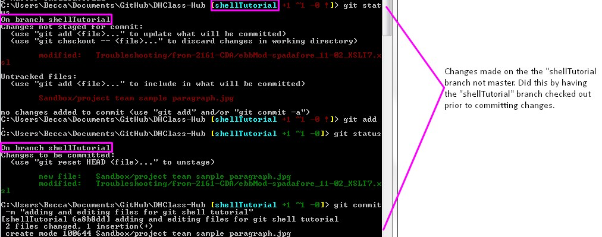
You can verify that you have successfully switched branches by using either of
the previously explained commands: git branch or git
status.
How to merge branches and push changes to remote:
Once there have been changes made via a branch and you wish to combine those changes with
the main (master) branch, you will need to do the following:
- Use the command
git diff followed by the names of the two branches you
want to compare. For example: git diff master development will show the
differences between the master branch and the development branch. If you want to
just get a list of the files changed between the two branches you can change the
command to git diff --name-only again followed by the names of the two
branches you wish to compare.
- Then use
git status or git branch to verify what branch
you are currently working in. If you are not on the master branch you should switch
to it using git checkout master.
- Once you have reviewed the differences you will want to merge the two branches. This
is done with the
git merge command followed by the name of the branch
being merged into the master branch. For example: git merge
development.
- To verify the merge was successful you can run
git diff again, and if
Git does not return anything that means there are no differences between the two
branches.
- Now when you run
git status it will show that local master is ahead of
the remote origin. To fix this and bring the remote origin repo up to date with your
local master, run the git push command.
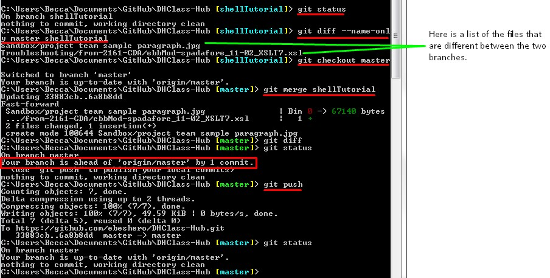
If you have done work in a branch, and you do not want to merge the changes into the
master branch until others on your team have reviewed it you can push the branch and its
changes before merging. As long as you have the branch selected in Git Shell, you can
use the command git push origin followed by the name of the branch to
update the remote repo with the new branch. For example: git push origin
development will push the development branch and its changes to the remote
origin. Now if another collaborator wish to clone the repo, and bring in your branch to
their local repo they will be able to do so.
How to delete a branch:
Some branches are created only temporarily; therefore, you may desire to delete a branch
before or after merging. The command git branch -d followed by the branch
name will delete the specified branch; if the branch is not fully merged in its upstream
branch or contained in the current branch, this command will fail with a warning.
Otherwise if the branch has been successfully merged with another branch then the
command will go through and the branch will be removed. Use git branch to
verify deletion. If you wish to remove the branch whether it has been merged or not the
command is altered slightly: git branch -D followed by the branch name.
Forking: what is it and why do we do it?
Part of the open-source etiquette of GitHub is that developers are encouraged to copy and
then improve code originally created by others. GitHub supports the creation of derived
projects through forking. When you fork a repo, you create a copy of it under your own
account, where it acquires an independent identity. You can do anything with a repo you
created by forking someone else’s project that you can with a repo you created from
scratch. The moment that you create the fork, your new repo is no longer synchronized
with changes in the repo from which you copied it originally. If you fork a repo and
make changes that you would then like to contribute to the original source, you can
issue a pull request, inviting the developers of the original repo to merge your forked
repo's changes into their original project.
How to fork and how to work in a fork:
To begin forking you need to navigate to the repo you wish to fork, and select the
fork
button in the top right of the screen.
Next, you will need to navigate to the new forked repo created on your account. From
here, follow the steps above on cloning, and clone the repo using
git clone and the HTTPS of the forked repo. Make sure you are cloning
the repo that is located on your account and not the source repo you forked from.
In order for the forked repo to reference the source repo, you will need to set up the
remote upstream. Do this with the following command: git remote add
upstream followed by the HTTPS of the source repo. Use the command git
remote or git remote -v to show all of the remote versions of
your repository. You should see origin
(the direct remote version of the forked
repo) and the upstream you just created. When you want to bring any new changes made on
the source repo into your forked repo, you can use the following commands to do so:
git fetch upstream and git merge
upstream.
These commands function the same way in a fork as they did in the cloned repo (reference
above for more detail).

In the branching section of this tutorial we discussed why using a
branch is good practice. When working in a forked repo, branching becomes even more
important and practical. The master branch is better to be left free of
developmental/experimental changes so that it can be used to sync with the upstream
(source repo). Therefore, it is best to add and change files in branches of your fork.
After you have created a branch, modified files, and committed said changes use the
command git log --pretty=short to see a listing of commits. Finally, to
push all the local branches and change to the forked remote use the command git
push --all -u. This command also sets up upstream tracking on all of the
branches.
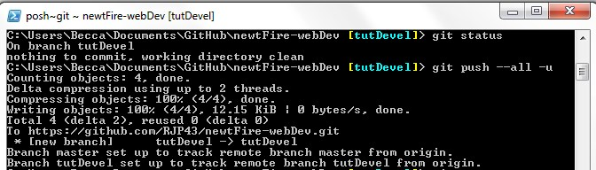
How to issue a pull request:
Now if we go back to our fork on GitHub, we can see that GitHub noticed that we pushed a
new branch with changes to the source repo's code. GitHub presents us with a big green
button to compare our changes and open a Pull Request to the original project. You can
alternatively go to the Branches
page at
https://github.com/[user]/[project]/branches to locate your branch and open a new Pull
Request from there.

If we click that green button, we'll see a screen that asks us to give our Pull Request a
title and description. It is almost always worthwhile to put some effort into this,
since a good description helps the owner of the original project determine what you were
trying to do, whether your proposed changes are correct, and whether accepting the
changes would improve the original project or not. We also see a list of the commits in
our forked repo's branch that are ahead
of the master branch. Should this branch
get merged by the project owner, a unified diff of all the changes will be made.

When you hit the create pull request button, the owner of the project you forked from
will get a notification that someone is suggesting a change with a link to a page that
has all of the information you provided on it. At this point, the project owner can look
at the suggested changes and merge it, reject it or comment on it. It is possible that
the owner will ask you to rebase from master
and resubmit a pull request. This
might happen if a series of changes were made on the source repo's master branch that
you had failed to fetch or if such changes were made after you submitted your request.
This is not a problem! The following link will take you to a very thorough YouTube video
on how to do this: https://www.youtube.com/watch?v=M7ZYkjOWr6g.
Preserving and Mining GitHub Repo Data
An important aspect of project management is data preservation. Long-term preservation
can be defined as the ability to provide continued access to digital materials, or at
least to the information contained in them, indefinitely. A sustainable preservation
program should address organizational issues, technological concerns and the digital
curation/data management process. Using Git and GitHub already provides one means of
data preservation; however, it is important to realize that all of the data collected
through the use of Git / GitHub is also important to preserve alongside the literal
files of your project. The two options we have researched to be most viable for creating
a backup of your Git and GitHub data are https://backhub.co/ and Amazon AWS Glacier. Another
nifty tool that we recommend you update frequently is the online digital archive of
websites. By adding updates to this site you can go back and review previous
saved versions of how your site looked. Besides data preservation it is important to
also be able to mine your GitHub data. The GitHub interface makes this really simple. In
any repo, at the top of the page, there are two tabs that are particularly useful for
mining your GitHub data: Pulse
and Graphs
.
TAKING IT FURTHER...
Git and GitHub can be a bit confusing for new users, but it makes project management much
more robust than the available alternatives, and learning to use it is worth the effort.
This tutorial is designed to get you started, and your instructors (and mentors) are
available to advise and help if you get stuck or confused. There are a number of
resources online to further your knowledge, some of which can be found at the following
links: